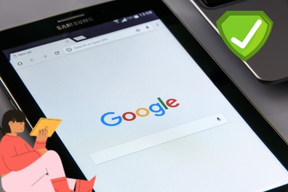
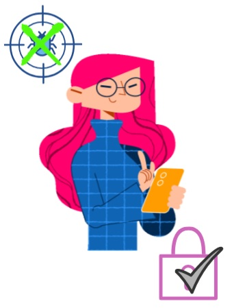
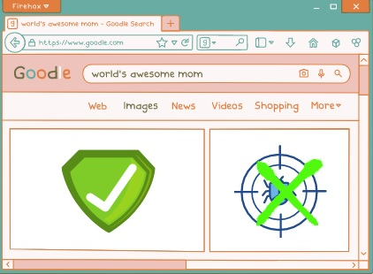

Navegue em Segurança
Ferramentas para uma navegação segura
7 dicas para navegar em segurança
Abrir ↓

Definição
Nos dias de hoje, é habitual os utilizadores de tecnologia navegarem na internet através de um navegador (Chrome, Firefox, etc.) onde acedem a sites de seu interesse. Contudo, nem todos os sites são seguros de navegar. Para navegar em segurança deve:
- Atualizar o navegador na maioria da vezes pois os vírus estão sempre em circulação na internet e assim sendo é necessária possuir sempre a versão mais atualizada do navegador;
- Ter cuidado com softwares livres e donwloads ilegais na rede pois o equipamento fica em risco pelas informações guardadas nele, para além de ser um crime;
- Criar duplos emails (um principal e outro secundário) sendo que o secundário servirá para receber informações de problemas do email principal (necessita de associar uma conta à outra) para saber sempre que género de problema existe para resolver;
- Ter atenção se os sites onde navega possuem o protocolo HTTPS pois este é uma das provas da segurança do site e da navegação do utilizador.

Ferramentas para uma navegação segura
- Gestão de Palavras Passe – existe softwares de encriptação que mantêm guardadas as palavras passe e com capacidade de gerir as mesmas (deve mudar regularmente as palavras passe de serviços mais sérios como banco e nunca utilizar a mesma palavra passe para diferentes contas). O sistema KeePass, verificado pela União Europeia, é um exemplo de software que guarda e gere as palavras passe que atualiza constantemente. É um programa gratuito, disponível para qualquer dispositivo e é “open-source” (qualquer pessoa com conhecimentos na área pode trabalhar com este sistema que diminuirá vulnerabilidades). Pode também aplicar a dupla autenticação (necessita de colocar a palavra passe e confirmar o acesso através de uma senha enviada por mensagem);
- Antivírus e Firewall – qualquer pessoa que utilize tecnologia (portátil, smartphone, etc.) deve possuir no mesmo um antivírus e um firewall, sempre ativos, pois estes detetam ameaças quer seja de um website ou de uma aplicação/programa. Normalmente, os sistemas operativos possuem á partida firewall contudo, não possuem antivírus. Um antivírus gratuito conhecido é o Avast que corresponde ao pretendido;
- Atualizações do Sistema Operativo – quando possuímos um dispositivo, devemos atualizar sempre que possível o sistema operativos pois o mesmo impedirá imensos problemas, como por exemplo os “bugs”;
- Rede VPN – A VPN (rede privada virtual) é um protocolo que protege os dados de um dispositivo através de encriptação que impede hackers a aceder aos seus dispositivos sem autorização, quando está conectado à internet. Assim sendo, é importante que o utilize quando acede à internet através de redes públicas/desprotegidas.

7 dicas para navegar em segurança
- Evite divulgar informações na Internet;
- Ter cuidado ao aceder nas contas bancárias na Internet;
- Não instalar aplicações piratas no seu computador;
- Ter atenção ao utilizar o seu cartão de crédito em compras online;
- Ter cuidado com downloads de arquivos;
- Evitar anúncios duvidosos;
- Ter atenção com os emails falsos.
Se quiser mais dicas para navegar em segurança na internet clique aqui.
